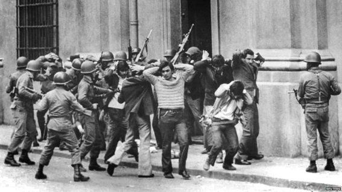

Aspectos Económicos, Jurídicos, Políticos y Militares de las Intervenciones
Explora los aspectos económicos, jurídicos, políticos y militares de las principales intervenciones militares de Estados Unidos en Panamá durante el Siglo XX, comprendiendo su impacto en la región y las relaciones bilaterales entre ambos países.
Durante el siglo XX, Estados Unidos tuvo un papel significativo en los asuntos políticos y militares de Panamá, principalmente debido a su interés en la construcción y control del Canal de Panamá, una vía crucial para el comercio marítimo mundial. Las intervenciones militares estadounidenses en Panamá estuvieron marcadas por una combinación de intereses estratégicos, económicos y políticos. En este contexto, exploraremos las principales intervenciones militares de Estados Unidos en Panamá durante el siglo XX y su impacto en la región.
Intervención en 1903:
Tras la independencia de Panamá de Colombia en 1903, Estados Unidos firmó el Tratado Hay-Bunau-Varilla con el gobierno panameño recién formado. Este tratado concedió a Estados Unidos el control exclusivo del Canal de Panamá y una zona de influencia conocida como la Zona del Canal. Esta intervención estableció una presencia militar estadounidense en Panamá desde el principio del siglo XX.
Construcción y Defensa del Canal:
Desde 1904 hasta 1914, Estados Unidos lideró la construcción del Canal de Panamá, una de las obras de ingeniería más importantes del mundo. Durante este período, el ejército estadounidense estuvo activamente involucrado en la construcción y defensa del canal contra posibles amenazas, incluyendo enfermedades tropicales y disturbios laborales.
Intervenciones posteriores:
A lo largo del siglo XX, Estados Unidos intervino en Panamá en varias ocasiones para proteger sus intereses en el canal y garantizar la estabilidad política en la región. En 1958, las fuerzas estadounidenses intervinieron para sofocar disturbios civiles durante las elecciones presidenciales panameñas. En 1989, Estados Unidos lanzó la Operación Causa Justa para derrocar al líder panameño Manuel Noriega, quien había sido acusado de narcotráfico y violaciones de derechos humanos.
Impacto:
Las intervenciones militares de Estados Unidos en Panamá tuvieron un impacto duradero en la política y la sociedad panameña. Si bien el Canal de Panamá sigue siendo una vía crucial para el comercio mundial, las intervenciones militares estadounidenses también generaron tensiones y resentimientos en Panamá. La retirada gradual de las fuerzas militares estadounidenses de Panamá en la década de 1990 culminó con la transferencia completa del canal a Panamá.
Tratado Alfaro-Kellogg (1926)
El Tratado Alfaro-Kellogg de 1926 estableció la neutralidad de la Zona del Canal de Panamá, garantizando la libre navegación en el canal y reafirmando la soberanía panameña sobre ese territorio estratégico. Además, proporcionó un marco legal para resolver disputas entre Estados Unidos y Panamá sobre el control y la operación del canal.
Tratado Arias-Roosevelt (1936)
El Tratado Arias-Roosevelt de 1936 abolió la presencia militar estadounidense en Panamá, otorgando a Panamá el control total sobre la Zona del Canal y restableciendo la soberanía plena del país sobre su territorio. Este tratado marcó un hito en las relaciones entre ambos países y simbolizó el reconocimiento de la independencia y autonomía de Panamá.
Tratado Remón-Eisenhower (1955)
El Tratado Remón-Eisenhower de 1955 modificó aspectos del Tratado Hay-Bunau Varilla, concediendo a Panamá una mayor participación en la administración y operación del Canal de Panamá. Este tratado fue el resultado de negociaciones bilaterales que reflejaron la evolución de las relaciones entre Estados Unidos y Panamá, así como el deseo de Panamá de obtener un mayor control sobre su territorio y recursos.